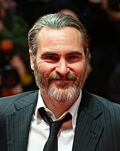
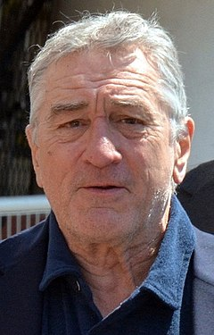
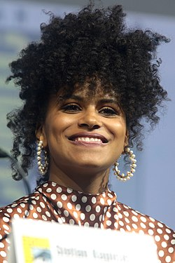
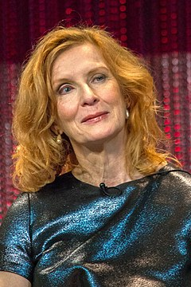

Joaquin Phoenix como Arthur Fleck / Coringa: Um comediante stand-up empobrecido e doente mental, desconsiderado pela sociedade, cuja história de abuso faz com que ele se torne um criminoso niilista.
Joaquim Phoenix atualmente tem 47 anos, nasceu nos estados unidos, trabalha como ator, produtor e ativista.

Robert De Niro como Murray Franklin Um apresentador de talk show que desempenha um papel na queda de Arthur.
Robert De Niro atualmente tem 78 anos, nasceu nos estados unidos, tem parentesco italiano, trabalha como ator, produtor e diretor.

Zazie Beetz como Sophie Dumond Uma mãe solteira cínica e o interesse amoroso de Arthur.
Zazie Beetz atualmente tem 31 anos, nasceu nos estados unidos, tem parentesco alemão e trabalha como atriz.

Frances Conroy como Penny Fleck: A mãe de Arthur, que trabalhou anteriormente para Thomas Wayne.
Frances Conroy atualmente tem 68 anos, nasceu nos estados unidos e trabalha como atriz.
